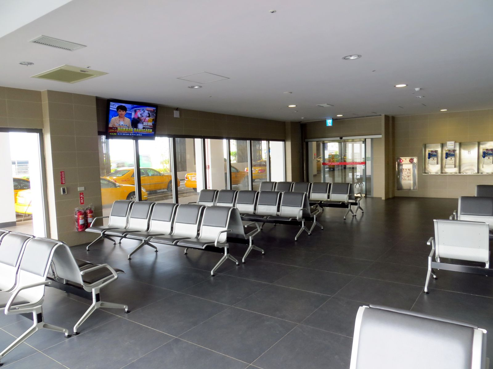
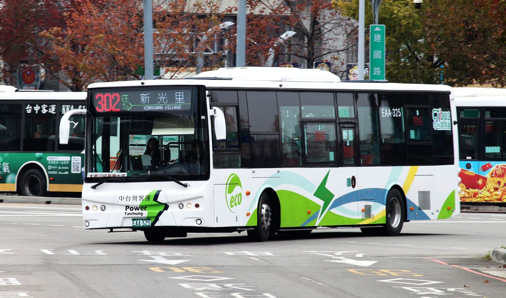

타이중공항 302번 버스, 타이중역까지 어떻게 탈까?
국제선 B1 1번 승강장에서 타고, 탈 때와 내릴 때 모두 카드를 찍으면 돼요.
게시
타이중공항 302번 버스는 국제선 B1 1번 승강장에서 타고, 과학박물관과 제2시장을 지나 타이중역 정류장까지 가요. 2026년 11월 기준 공항 출발 첫차는 06:45, 막차는 22:45이고 낮에는 대체로 15~40분마다 있습니다. 이지카드로 탈 수 있지만 내릴 때도 꼭 다시 찍어야 해요.
여행자 커뮤니티에서 자주 나오는 질문을 타이중 공항과 타이중시 공식 버스 정보로 확인해 정리해봤어요.
01 · 타이중공항 302번 버스 한눈에 보기 (2026년 11월 기준)
| 항목 | 내용 | 확인할 곳 |
|---|---|---|
| 타는 곳 | 국제선 B1 버스 승강장 1번 | 공항 공식 버스 안내 |
| 운행 구간 | 臺中國際機場 ↔ 新光里(新福路), 운행 회사 中台灣客運 | 타이중시 공식 버스 정보 |
| 공항 출발 시간 | 첫차 06:45 · 막차 22:45, 하루 30~34회(날짜마다 다름) | 날짜별 시간표 |
| 배차 | 낮에는 대체로 15~40분(주말엔 50~60분 빌 때도), 20:00 이후는 45~60분 | 날짜별 시간표 |
| 주요 정류장 | 秋紅谷 → 市政府 → 科博館 → 第二市場 → 臺中車站(C月台) | 노선 정류장 목록 |
타이중 공항 공식 안내에 따르면 시내버스는 국제선 B1에서 타고, 302번은 333·357·555번 등과 함께 1번 승강장에 서요. 타이중시 공식 버스 정보의 정류장 목록을 보면 302번은 공항을 나와 타이완대로(臺灣大道) 버스 전용차로를 따라 秋紅谷, 新光/遠百, 市政府, 科博館(과학박물관)을 지나고, 第二市場(臺灣大道)를 거쳐 臺中車站(C月台)에 섭니다. 종점은 타이중역보다 더 동쪽인 新光里(新福路)라서, 타이중역에서 내릴 거라면 정류장 이름을 잘 보고 있어야 해요.
02 · 302번 버스 타는 곳과 시간표 확인하기
입국장에서 B1으로 내려가기 버스 승강장은 국제선 B1에 있어요. 1번 승강장에 302번이 함께 표시되니 노선 번호를 보고 줄을 서면 됩니다.
날짜별 시간표는 공식 사이트에서 타이중시 공식 버스 정보 사이트(citybus.taichung.gov.tw)에서 날짜를 골라 시간표를 볼 수 있어요. 11월 3일(화)은 34회, 11월 7일(토)·8일(일)은 30회로 요일마다 조금씩 달랐습니다.
실시간 도착은 앱으로 같은 사이트와 타이중시 공식 앱 台中Go에서 버스가 지금 어디쯤 오는지 볼 수 있어요. 경로는 구글맵으로 보고, 도착 시간은 버스 앱으로 확인하는 방법이 편했다는 여행자 후기도 있습니다.
밤 비행기라면 막차 확인 20:00 이후에는 45~60분 간격이고 공항 출발 막차는 22:45예요. 늦게 도착하는 편이라면 도착 전에 그날 시간표를 한 번 더 보세요.

03 · 이지카드로 302번 타기, 내릴 때도 찍어요
타이중시 공식 버스 정보에 따르면 타이중 시내버스는 이지카드(悠遊卡), 아이패스(一卡通), 아이캐시(icash2.0) 같은 교통카드로 낼 수 있어요. 요금은 거리에 따라 달라지기 때문에 탈 때 한 번, 내릴 때 한 번 카드를 찍습니다. 현금보다 교통카드가 조금 싸다고 안내하지만, 정확한 금액은 공식 사이트 요금 조회에서 확인하세요.
10km 무료는 시민 전용 '10km 무료' 혜택은 타이중 시민 등 등록한 사람만 받을 수 있어요. 여행자가 쓰는 일반 이지카드는 거리만큼 요금을 냅니다.
내릴 때 안 찍으면 다음에 카드를 찍을 때 자동으로 요금이 빠지고, 그 이용분은 기본 거리 할인을 못 받는다고 안내해요. 같은 카드로 타고 내리세요.
잔액은 미리 채워 두기 국제선 1층 입국장 패밀리마트(06:00~20:00)가 교통카드 충전을 안내하고 있어요. 버스를 타기 전에 잔액을 확인해 두면 마음이 편합니다.
04 · 302번 말고 다른 타이중공항 버스는?
타이중역 방면 500·333번 공항 공식 안내는 타이중역과 공항을 잇는 노선으로 500번(2번 승강장)과 333번(1번 승강장)도 소개해요. 오는 버스를 먼저 타는 것도 방법입니다.
고속철 타이중역은 156번 고속철로 바로 갈아탈 거라면 공항과 고속철 타이중역을 잇는 156번(2번 승강장)을 보세요.
짐이 많으면 택시도 처음 가는 길에 캐리어가 크거나 일행이 많다면 택시가 편했다는 여행자 의견도 있어요. 요금은 미리 앱이나 기사에게 확인하세요.

05 · 자주 묻는 질문
타이중공항 302번 버스는 어디서 타요? 국제선 B1 버스 승강장 1번에서 타요. 타이중 공항 공식 안내(2026년 11월 기준)예요.
302번 버스로 타이중역까지 갈 수 있나요? 네. 공항에서 출발하면 第二市場을 지나 臺中車站(C月台) 정류장에 서요. 종점은 新光里라 그 전에 내리면 됩니다.
첫차와 막차는 몇 시예요? 2026년 11월 기준 공항 출발 첫차는 06:45, 막차는 22:45예요. 날짜마다 횟수가 달라서 공식 시간표를 확인하세요.
이지카드로 탈 수 있나요? 네. 이지카드·아이패스·아이캐시를 쓸 수 있고, 거리 요금이라 탈 때와 내릴 때 모두 찍어야 해요.
타이중역에서 공항 갈 때는 어디서 타요? 공항 방면 302번은 臺中車站(臺灣大道) 정류장에 서요. 출발 전에 공식 앱으로 도착 시간을 확인하세요.
돌아가는 날 공항 동선은 타이중 공항 출국, 캐리어 무게와 편의점은 어디서 챙길까?에 정리해 두었어요. 302번이 서는 과학박물관 정류장에서 걷기 좋은 길은 타이중 도심 걷기 코스를 참고하세요. 타이중역에 내려 첫 끼를 고른다면 타이중 맛집 지도와 타이중 대만식 맛집을 먼저 보세요. 지도에 있는 Taichung Traditional Cuisine은 타이중역 근처에 있어요.
지도에서 타이중 맛집도 확인해보세요
공항에서 시내로 들어가 먹을 첫 끼를 지도에서 미리 찜해 두세요.